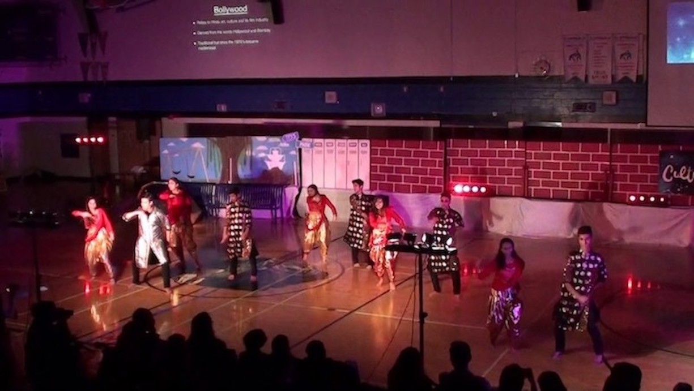

Tradition and diversity

CultureFest is an amalgam of diverse cultures, incredible performances, and rich foods, all of which reflect upon the multicultural community not only at Turner
Fenton but globally as well. Moreover, the dynamic, two-day, non-profit event has been hosted entirely by high school students from grades nine to twelve annually
for the previous 28 years. With the number of total participants and volunteers exceeding 1000, the event is the largest student-run event in Peel